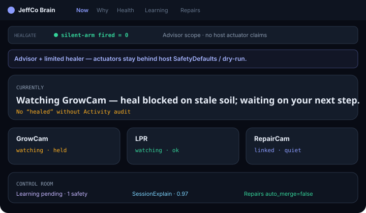
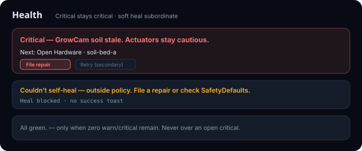
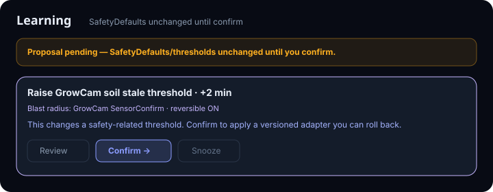

Brain
Ops metacognition console — what JeffCo apps are doing, why, what’s wrong, and what needs your confirm.
For operators who want explainable health, learning, and repair cards — not fake “I’m fine” theater.

What it does
Brain watches linked JeffCo modules and answers four jobs: what’s happening now, why a decision fired, what’s wrong, and what to repair or learn.
Now is a one-line ops sentence plus an app strip. Why is action → reason → evidence chips. Health is a severity stack with a next step on every card.
Learning holds proposed adapters and threshold tweaks until you confirm. Repairs are structured evidence cards with dry-run before send.
Brain advises and can soft-heal within policy. Actuators stay behind host SafetyDefaults / dry-run. No consciousness cosplay.
Capabilities
Day-one surface
Now
Day oneCurrent goals/state across linked apps.
Why
Day oneExplanations with mandatory evidence chips.
Health
Day oneWarn/critical stack; Retry worker / Clear soft fault when allowed.
Learning
Day onePending adapters; safety-adjacent pin + confirm theater.
Repairs
Day oneEvidence cards → GitHub/Builder/Improv/in-app; dry-run ≠ sent.
Wizard
Day oneLink app → see Now → first Why gate → optional learning → repair awareness.
Advanced / gated
Env adapt outside envelope
AskAsk required — never silent apply.
SafetyDefaults / thresholds
Two-stepTwo-step confirm only; never silent. Memory tier / deep adapter versioning UI.
How to use it
First-run (wizard)
Link an app
GrowCam, LPR, FarmCam, or another JeffCo module.
See Now
One-line truth for that app.
First Why
Real explain or Practice; Continue locked until done.
Optional learning
Non-safety only in-wizard; safety-adjacent routes to Learning with firm banner.
Repair path
Notify on critical health or Skip; no auto-file from wizard.
Daily loop
Read Now
If it claims healed/updated, Activity must show the confirm/heal ack.
Open Why
When something surprising fired — demand evidence chips.
Triage Health
Next step first; soft heal only when policy allows; re-read before green.
Clear Learning pending
Two-step for SafetyDefaults/thresholds.
File or dry-run Repairs
With attachments; skim Activity filters (Heals / Learning / Repairs / Env).
Honesty / trust
Clarity GH Pages honesty — never silent heal. Never fake wellness.
- No silent heal / rewrite. Thresholds and SafetyDefaults never change without explicit confirm + versioned reversible adapter.
- Heal ≠ policy rewrite. Soft fault clear leaves SafetyDefaults untouched; blocked heal shows blocked + next step — no success toast.
- Critical stays critical. No All green / fake wellness while warn or critical remain.
- No fake “I’m fine.” Ban sentience and false wellness copy.
- Repair dry-run ≠ sent. Evidence required on cards.
- Advisor scope — Brain does not claim actuator moves on host modules.
- Activity distinguishes Heal attempted/blocked · Learning confirmed/rejected · Env asked · Repair dry-run/sent.
Screenshots
Brochure frames from crown mocks — Now, Health stack, Learning confirm theater.


Learning confirmed · Learning rejected
Env asked · Repair dry-run · Repair sent
Get started
Wire module path / docs when Builder queues the Pages deploy.